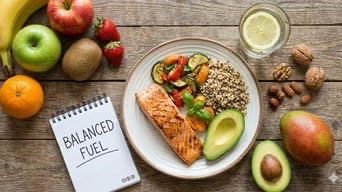

Expert Nutrition & Fat Loss Guide

Essential Foods & Drinks to Limit for Weight Loss
While targeted exercise is a pillar of fitness, nutrition is the foundation of sustainable weight loss. To maximize your results, it is essential to recognize the "hidden" calories that often stall progress.
1. Sugar-Loaded Beverages
- Soda and Soft Drinks: A standard 12-oz can contains roughly 40 grams of sugar, providing "empty calories" that spike insulin and promote fat storage.
- Sweetened Coffee Drinks: Many flavored lattes and frappés contain more calories and sugar than a full dessert, stalling your fat loss journey.
- Fruit Juices: Even 100% juice lacks the essential fiber found in whole fruit, leading to rapid blood sugar spikes and decreased satiety.
- Energy Drinks: These are often loaded with artificial stimulants and sugar, leading to a metabolic crash shortly after consumption.
- Sweetened Tea: Despite the "healthy" image, many commercial pre-bottled teas contain as much high-fructose corn syrup as carbonated soft drinks.
Better alternatives: Filtered water, unsweetened herbal tea, black coffee, or sparkling water with fresh citrus.
2. Processed Foods to Minimize
- White Bread and Refined Grains: These products are stripped of nutrients and fiber, converting quickly into glucose once digested, which promotes fat storage.
- Processed Meats: Items like bacon, deli meats, and hot dogs are typically packed with sodium and nitrates, contributing to inflammation.
- Packaged Snack Foods: Most crackers and chips are designed to be "hyper-palatable," making it difficult to maintain portion control during your diet.
- Traditional Fast Food: These meals are usually high in inflammatory trans fats and excessive calories while offering very little nutritional value.
- Frozen Convenience Meals: Though convenient, these are frequently laden with preservatives and hidden sugars to enhance shelf life.
Better alternatives: Whole grains (quinoa, oats), fresh leafy greens, lean protein sources, and raw nuts.
3. Identifying Hidden Sugar Sources
- "Low-Fat" Labelled Products: When fat is removed, manufacturers often add significant sugar to maintain flavor, which is counterproductive for fat loss.
- Sugary Condiments: Everyday items like ketchup, BBQ sauce, and some salad dressings are surprisingly high in hidden caloric sweeteners.
- Granola and Cereals: Marketing suggests health benefits, but many brands contain more sugar than traditional desserts.
- Flavored Yogurts: Fruit-on-the-bottom yogurts can contain more sugar than a serving of ice cream in some commercial brands.
- Protein/Energy Bars: Many are essentially candy bars with added protein; always check the label for high-fructose corn syrup.
Better alternatives: Natural full-fat products in moderation, homemade oil-and-vinegar dressings, and plain Greek yogurt.
4. Alcohol and Metabolism
- Beer and Ales: These contribute significant liquid calories and carbohydrates that can lead to increased abdominal fat.
- Mixed Cocktails: Drinks using fruit juices, sodas, or syrups are a double-threat of high alcohol and high sugar content.
- Wine Consumption: While lower in sugar than cocktails, alcohol itself is calorie-dense and temporarily halts your body's fat-burning process.
- Lowered Inhibitions: Alcohol consumption often leads to poor late-night food choices and increased appetite the following day.
Better alternatives: Spirits with zero-calorie mixers (soda water), dry wines, or dedicated alcohol-free training blocks.
Practical Tips for Dietary Success
- Read Nutrition Labels: Look past marketing claims and check the actual ingredient list.
- Commit to Meal Prep: Control your ingredients by preparing meals at home for the week.
- Stay Hydrated: Drinking water before meals helps naturally manage your portion sizes.
- Prioritize Protein: Include lean protein in every meal to support muscle and stay full longer.
- The 80/20 Rule: Aim for nutrient-dense foods 80% of the time to maintain a sustainable lifestyle.
Sustainable weight loss comes from reasonable habits you can maintain long-term, not from extreme restriction. Focus on adding nutrient-dense foods rather than just eliminating what you enjoy.